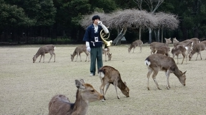

髪も伸びる季節？ [梅吉]


うそやで これは「すりこ」いうみせの おひなさまかつらや
うえにあるんは おだいりさまの かんむりやて


せや！ いまおかーさんのまえがみも こんなんやで
びよーしさんいうひとと こみゅにゅけーしょんがあかんかったて
すち子っぽいてなげいとったわwww

このペット用かつらは3COINSで買いました。御雛様バージョンとお内裏様バージョンがありましたよ。
御雛様のはピンクっぽい髪色だったのでこちらを購入＾＾
猫耳がをうまく出せるように切り込みを入れようと思ったのですが
ハサミを入れると髪の毛がどんどん抜けちゃうような構造なので断念w
前髪の隙間からうまく耳を出して一筋長いのを垂らすと良い感じに(*>艸<)
こんな女の子いますよね。
梅吉のコメントにもありますが、今、私の前髪はかつてないくらいのぱっつんw
すち子さんほど短くはないのですが前髪と横髪の長さの比率がすち子感。
最近美容室を変えたのですがまだ美容師さんとの意思疎通が今ひとつなんですよね。
美容師さんは人当たりも良いし仕上がりも綺麗なので気に入ってはいるんですけど。
好みや似合う似合わないはある程度の期間通わないと把握してもらえないかなぁ。
髪は伸びるからあまり気にしてませんけど
ネタがどんどん溜まっているので今日のZEPETOはお休みします。
（作業も進んでいない・・・）
うまし冬めぐりを利用して興福寺中金堂のツアーと柿の葉寿司作りを体験してきました。
去年10月、興福寺中金堂が300年ぶりに再建落慶されました。
興福寺は度々火災に遭っているので（南都の焼き討ちにもあってるし）
中金堂の再建はお寺の有史以降今回で８度目だそうです。
ツアーのガイド役は興福寺の僧侶の方。お名前忘れちゃった。ごめんなさい。
一般拝観時間前なので貸切です。
静かで清々しい空気が気持ち良いです＾＾
（小雨模様でしたが。）
こちらが再建された中金堂です。
柱の跡（基礎部分）がしっかり残っていて柱の数も書き残されていた。
詳細な設計図が残っていた。
縁起絵巻に中金堂の外観が描かれていた。
関西にはそれを形にできる宮大工がそろっていた。
と好条件が揃い建立当時の姿をほぼ再建できたそうです。
お堂の中は撮影禁止ですが外から中をパチリ。
御本尊は釈迦如来坐像です。お顔が隠れちゃってますね。
右の写真は持国天、後ろに影が見えているのは多聞天です。
写真はありませんが御本尊を挟んで反対側には増長天と広目天。四天王が四隅を固めています。
これらの像、運慶作とか（父親の）康慶作とか言われていますが鑑定は未だ定かではないようです。
僧侶の方は運慶って言い切ってたけどw
この後僧侶の方の案内で堂内に入りました。
入った直後少し時間をくださいと言われて僧侶の方が唱え始めたのは般若心経。
静かな堂内に響く読経。良い時間を過ごしました。
こちらは中金堂を取り囲んでいた回廊の柱の跡。
ツアーの後少しだけ僧侶の方とお話しできる機会があったのですが
後々この回廊も再建されるといいなぁとの事でした。
現在興福寺には象徴となるような門が無いのですが
火災で焼失する前は猿沢池側の入り口に南大門があったそうです。
それも合わせての再建が待たれるとも。
薬師寺の修復が終わった今、次に文化庁の予算が降りるのは興福寺なんですって。
近々老朽化の激しい五重の塔（１枚目の写真の右の塔です）の修復に入るそうです。
完成までには５〜6年かかるのでしばらく見られなくなりますよ。
見たいと思っている方は早めに奈良に行きましょう＾＾
興福寺のツアーの後は鹿寄せ。

お兄さんがホルンを吹くと鹿さんがわらわらと集まってきます。
残念ながらこの日は鹿さんにあまりやる気が感じられなくってw
（地元のおっちゃんは「ホルンの吹き方があかん」と(⌒-⌒; ）
以前行った時の動画があるので興味のある方はこちらをどうぞ。
梅も見てきましたよー。
ウメジロがあるんだからウメジカがあってもいいじゃない？(*>艸<)
柿の葉寿司体験はこんな風に用意万端で包むだけ。
プロの酢飯の極意を盗もうと思ってたのにw
企業秘密は簡単には教えてもらえないかしらね。
柿の葉に酢飯と鯖＆鮭の具を包むのは結構アバウトでも大丈夫。
型に入れてぎゅっと蓋をして押すので
出来上がりは誰が作ってもそう大きくは変わらないかもしれません0(≧▽≦)0
その証拠に私とおっとが作ったものはなかなかの出来でした！
家でお夕飯に美味しくいただきましたよ。
本当は翌日が美味しいらしいのですが待ちきれなかった。

カフェオレ色の梅吉

梅吉 2023年8月10日 永眠


梅吉と出会った譲渡会

犬猫の理由なき殺処分ゼロ
妄想広告
UMEKICHI 光

爆発的に早い！
時々攻撃的！
Thanks to Mr.Boss365
爆発的に早い！
時々攻撃的！
Thanks to Mr.Boss365

梅吉さんカツラ似合いますねー。私は2枚目の写真がZEPETOちぃさんとお揃いのボブに見えました。可愛いんじゃない?
by zombiekong (2019-03-11 00:18)
梅吉くん、ヅラですかー！ZEPETOの某氏のような(^^;;
嫌がらずにかぶってますね。かぶりもの、いろいろいけそう。
美容院は悩みですねー。私は今の美容院に変えた時、ほぼおまかせでカットしたのですが、周りからの評判がめっちゃよくて、かなり信頼しちゃってます。
今は前髪は作ってなくて流してますが、以前はおでこだしたくなくて作ってましたが、絶対、眉出さないで！！と強固にお願いしてましたよー。今、前髪を作る場合は短いのが流行りなんですよね。
興福寺、いいですねー。一般拝観時間前だと静かで落ち着いて見れそう。あー、でも、朝、早いんだろうなぁ。近い人でないと無理だわ。
by ChatBleu (2019-03-11 06:39)
今日の写真はインパクトがありますねぇ＾＾
素直に被ってくれるの、いいなぁ。
by ぽちの輔 (2019-03-11 06:52)
梅吉さんが徹子さんのたまねぎ？頭に見えます^^
by ニコニコファイト (2019-03-11 06:57)
梅吉さん、カツラも似合いますねぇ( ^ω^ )
元がイケメンだと何をしてもカッコよくなるのはずるいかと(⌒-⌒; )
うちの大御所は何をしてもほけほけですw
by ニッキー (2019-03-11 07:53)
いきなりの梅吉さんの写真に驚いてしまいました！
でも、似合ってますよ(^_^)
先日、新潟の弥彦神社に立ち寄りましたが、神社の中に結構大きな鹿園があって驚きました。
by kou (2019-03-11 08:00)
梅吉さん♪決まってますね♪
とても可愛いですよぉ～(#^.^#)
柿の葉寿司体験！おもしろそうです！
翌日まで待てない（笑
分かる気がします！
by きぃ (2019-03-11 08:16)
わはははははー(≧∀≦)
今回の写真、オモロすぎー！！！
こんな商品も300円で買えるんですね。
記事後半、元奈良県民として懐かしく拝見しました！
by よーちゃん (2019-03-11 08:56)
一足お先にインスタで見て(爆
これほしいわ～と思いました。今日帰りにスリコ寄ります(笑
おとなしく、そしてまんざらでもない表情に拍手ですよ(^^
ちぃさんのすち子ぱっつん髪も見てみたい・・・ZEPETOモードで
自撮りプリーズです♪
興福寺、行かねば！梅鹿いい感じです。柿の葉寿司は、
伊勢に行く特急の中でビーヤと一緒に頂きました。具が何種類かあったような。
手作り体験ができるのは楽しいですね。自宅で作るのは難しいか・・・
こんな立派な柿の葉がないですな。葉っぱは味付けなしですか？
by marimo (2019-03-11 09:34)
うめ吉さんのロングヘヤー
はるな愛に 似てる？(^^)
by チャー (2019-03-11 09:56)
わたしは、ちぃさんのウィッグなのかと思いましたよw
それにしては小さすぎよ！ってか(笑)
梅吉君、違和感ないのは何でだろう・・・
貸し切りの興福寺だなんて、めちゃめちゃ贅沢な時間^^
中金堂見事ですね。
実際に観に行けるのはいつかなあ～
ZEPETOは始めると画像加工大変だからねｗｗ
by リュカ (2019-03-11 10:50)
梅ちゃんｗｗｗ
すごい！着こなしていますね～♪
3coinsで売っているのですねー！
覗いてみよう(ΦωΦ)ふふふ
うちには、丸髷のようなヅラでしたらございます(笑)
興福寺、何年か前に行きました。
中金堂、美しいですね！！
これは見なきゃいけませんね。
鹿ちゃんにも会いたいですし(*´艸｀*)
by カトリーヌ (2019-03-11 11:58)
こんにちは。
いきなりの梅吉子さんですね？（爆）似合い過ぎ！！
三枚目は可愛い！！お洒落なお嬢さん風です。
四枚目、座敷わらし？床の間に座っていそう。
五枚目のたまねぎおばさん！！いるいる？感じです（爆）です。
すち子？知らないけど、リンク怖いです。
カット担当者との意思疎通難しいみたいです。
ボスママ、担当者退職で担当者の新しい美容室に変えました。
「うまし冬めぐり」面白そうなキャンペーンです。
興福寺・五重の塔も修復期間長いですね。
柿の葉寿司体験！！包むだけは残念ですが・・・
お腹・お味に満足ですね！？(=^･ｪ･^=)
by Boss365 (2019-03-11 12:00)
梅吉さんって、カツラをつけると、、和顏だったんだ！
いるいる！こういう顔の人！
なんちゃって、受けちゃいました☆*:.｡. o(≧▽≦)o .｡.:*☆失礼
前髪の短いのも悪くないけど、髪型変えると、見慣れるまで
少し時間がかかりますね。
by nachic (2019-03-11 12:20)
梅吉さん、めっちゃヅラお似合い～(≧▽≦)
お雛様というより金太郎？！
ほんと大人しく被り物に協力してくれる良い子ですね^^
前髪でずいぶん印象変わりますよね。
カットする時は髪が濡れていて、乾かしたらえ？こんなに短くなるの？？はよくあります^^;
奈良公園は鹿の角切りは見たことありますが、鹿寄せは未体験です。
誰がホラ貝ふいても集まってくれるのでしょうか？？？
by ゆきち (2019-03-11 12:35)
梅吉くん最高ッス(≧▽≦)
by palpal (2019-03-11 14:30)
ドール用のかつらだと思っていたらペット用だったのね。
インスタでこの写真を見た時は何事かとびっくりしましたｗ
梅吉くんの髪を優しく撫でたいっ(≧▽≦)
前髪ぱっつん。すち子さんに飛んでみたわ( *´艸｀)
大丈夫。髪は伸びます！2か月くらいでいい感じになるかな？
奈良も行きたいな～。
うまし冬めぐりめぐりした～い(*^-^*)
by emi (2019-03-11 16:37)
梅吉さん、いつの間にか梅子さん？（笑）
よく似合ってます。
病院の待合室で観て、笑ってました。
コメントも最高です。
おかーさんは、前髪パッツンなのですね（笑）
私も前髪パッツンしましたが、普通の長さまで伸びなくて、
髪の毛が伸びる元気もないようです（笑）
興福寺、阿修羅像を見に行って以来ですから、数年は行ってないです。
中金堂が再建されたのですね。
気候が良くなれば出かけてみたいです。
柿の葉寿司、期待してましたよ（笑）
包むだけだったのですね（笑）
奈良に行くと、帰りには柿の葉寿司を買いたくなります。
by kiki (2019-03-11 18:00)
どれもお似合いですけど、一枚だけ選ぶとすれば
上から2枚目かなぁ～^^
by 小松達也 (2019-03-11 18:30)
歴史探偵の気分になれるウェブ小説を知ってますか。 グーグルやスマホで「北円堂の秘密」とネット検索するとヒットし、小一時間で読めます。北円堂は古都奈良・興福寺の八角円堂です。 その１からラストまで無料です。夢殿と同じ八角形の北円堂を知らない人が多いですね。順に読めば歴史の扉が開き感動に包まれます。重複、 既読ならご免なさい。お仕事のリフレッシュや脳トレにも最適です。物語が観光地に絡むと興味が倍増します。平城京遷都を主導した聖武天皇の外祖父が登場します。古代の政治家の小説です。気が向いたらお読み下さいませ。（奈良のはじまりの歴史は面白いです。日本史の要ですね。）
読み通すには一頑張りが必要かも。
読めば日本史の盲点に気付くでしょう。
ネット小説も面白いです。
by omachi (2019-03-11 21:13)
羨ましい 抜けても伸びたり増えたりしないもんなぁ
by (。・_・。)２ｋ (2019-03-11 23:50)
似合ってる～！！ ^▽^;)
しかも梅吉さん、被り物がぜんぜん平気そうなところがすごい！！
ウチのヤツにもかつら被せたことがありますが
ティナ・ターナーって感じでした。^^;
中金堂、詳しくは分からないのですがとても威厳がありますね。
柿の葉寿司とか笹の葉寿司って、日持ちするから
葉っぱの香りも浸透してとても美味しいですよね！ ^^)
by yes_hama (2019-03-12 00:31)
大爆笑(今、夜中なので心の中でね)（ﾟ□ﾟ）
しかし、良く似合ってると言うか違和感無いねw
by 英ちゃん (2019-03-12 02:39)
意思疎通のできてないお客さんの前髪を、よくぞパッツンと切ったものです。
勇気ある美容師だと思いました（笑）
うめきちやでの梅吉さん、何度見ても可笑しいね。
by kiki (2019-03-12 09:35)
こんにちは。再訪です。
梅吉子さん、誰かに似ている？と感じていました・・・
岸田劉生の「麗子像」に似ているかな！？(=^･ｪ･^=)
by Boss365 (2019-03-12 12:15)
こんなカツラがあるんですね！
おとなしくかぶってくれる梅吉さん、動じてないのがすごい～表情と姿勢の微妙な変化がセリフとぴったりでナイスです♪
たまねぎおばさんに見えるし～＾m＾
最後は可愛くなりましたね＾＾
前髪ぱっつん‥それ、短めにとかいうワードありの注文だったんでしょうか。じつは意外と似合ってるとか！？
by sana (2019-03-12 15:28)
ページを開いたとたん、コーヒー吹きました！
梅吉さん、似合いすぎです～～
by liang (2019-03-12 17:50)
今日はおかしい☆楽しい☆うめきちはん☆（笑）
前半かなり笑わせていただきました♪
ちょっと暗～い気持ちも平常運転に戻りました☆
おおきにどうも～、って私まで大阪弁に。
美容師さんとの意思疎通って、大変ですよね。
やんわりじっくり好みを把握してもらって下さいね。
… でも次回行くまでにはちょっとかかりますね（苦笑）
by あとりえＳＡＫＡＮＡ (2019-03-12 19:33)
梅吉さん、インスタで見ました(^^)
ネットはやっと復旧しましたが、インスタはiPhoneなので大丈夫でした。
by ma2ma2 (2019-03-12 20:19)
zombiekongさん＞
そうなんです！
実はZEPETOのアバターとぱっつん前髪で共演しようと思ったのですが
うまく出来なくてやめましたw
あの画像もう少しお待ちくださいねー＾＾
ChatBleuさん＞
梅吉は暴れん坊なんですが被り物もおとなしく被ってくれるんですよ＾＾
結構得意分野なのであれこれ過去記事でアップしてるんですが
私が一番気に入っているのは
https://umekichi-the-cat.blog.so-net.ne.jp/2017-07-10
の帽子かなぁ・・・・
お時間あったら見てくださいねー。
ほぼおまかせカット、私もお願いしてみたいです！
でもそれをする勇気がなくって(⌒-⌒;
私の場合初回にあれこれ注文を言うんですがうまく伝わらないと言うか。
何度か通って前回のここはこうしてほしいって伝えていくのが
良いみたいです。
興福寺の集合時間は８時10分でしたw６時半過ぎに家を出ましたよー＾＾
ぽちの輔さん＞
割と協力的、というか被せて「なにがおきてるんやろ・・・」と
戸惑っているうちにサササッと撮影を終了します(≧▽≦)
ニコニコファイトさん＞
梅吉は４ちゃい（になる）で徹子さんのことは知らないようです(*>艸<)
ニッキーさん＞
動物の被り物もイケますが（笑）髪の毛ヅラもイケました0(≧▽≦)0
イケメン・・・ふふふふ(〃▽〃)
こういう物を受け入れやすいあっさりした顔でもあるのかもしれません。
人間で言えば化粧映えする人、みたいな(*>艸<)
kouさん＞
ニャンコに髪の毛、意外に違和感なく似合うんだなと
私も思いました＾＾
鹿さん、可愛いですよねー。
奈良公園の鹿さんは積極的すぎますけどw
新潟の彌彦神社の鹿さんは神様の御使ではないようですね！
どうやら和歌にちなんで飼育されているらしい・・・
きぃさん＞
髪の毛も似合うんだ、と再発見でしたよ(*>艸<)
柿の葉寿司は前々からその日の夕食にする気満々でw
「食べごろは明日です」という言葉は聞こえないふりしましたwww
よーちゃん＞
このカツラ、お雛祭りも終わって買ったので半額でゲットしたのでーす(๑˃̵ᴗ˂̵)و
奈良巡り（笑）離れて知る地元の素晴らしさ、なんて♪
我が家は平安文化より天平文化派なのです＾＾
marimoさん＞
梅吉は暴れん坊なんですが被り物は割と協力的なんですよ＾＾
特に寒い時、あったかい素材の被り物だと
気持ち良さそうにそのまま寝始めることもw
おおらかすぎてびっくりするわー(*>艸<)
私の前髪ぱっつん、ZEPETO自撮りモードではうまく写せませんでした。
自毛が映らないのw残念！
柿の葉寿司の葉っぱは軽く塩漬けしてあるそうです。
この柿の葉は売っているのは見たことないです・・・
奈良のコアなところに行ったらあるのかしらー。
チャーさん＞
そうきましたか0(≧▽≦)0
たしかにはるな愛さんは猫系の顔かもw
リュカさん＞
盛るタイプのウィッグならありかもよー＾＾
シニヨンに入れるタイプのだとアフロっぽくなって面白いかもね！
（もちろん梅吉にですよwww）
もしも奈良にいらっしゃることがあるようだったらこのツアーオススメです。
東大寺とか他の名刹古刹のツアーもありました。
私もまた利用しようと思ってまーす。
ゼペット、写真も効率よく撮りたいから工程表みたいなの作ったわよ！！(*>艸<)
カトリーヌさん＞
このスリコのヅラ、実はおっとが買ってきたのですが（笑）
二軒目にして見つけたそうです。（巡ったんかい！）
季節商品として売り切りだったらしく半額でゲット！
もう置いていないかもしれませんが見つけたらお得に手に入るかも！？
幸運を祈りまーす(≧▽≦)
奈良公園、これからの桜の季節も良いですよね＾＾
と同時に観光客もどっさりかもしれませんけれどwww
Boss365さん＞
幼い頃「梅子さん」と呼んでたのを思い出しましたよ(*>艸<)
梅吉は「ぱつっ」としたおかっぱじゃなくても座敷わらしの要素、あると思います！
何たって我が家の守り神、幸運の猫様ですからー＾＾
麗子像は・・・
子供の頃あの麗子ちゃんは赤ん坊少女タマミちゃんと同じくらい怖かったです・・・
麗子ちゃんってご自分のお子さんだったんですよね。
あんな妖艶な？妖怪な？？お子さんだったんですかねぇぇぇぇぇぇぇぇ
美容室はここ数年ジプシーだったのですが
やっとここ（美容師さんも）良いかなというお店だったので
これから良好な関係とカットが望めるように頑張りまーす＾＾
nachicさん＞
ヅラの梅吉、はるな愛さんに似ているという声もありましたよw
あっさり系の和顔なので被り物が似合うんでしょうか(≧▽≦)
前髪は美容師さんに「僕に任せてください！」と言われたのですが・・・
実はぱっつんが似合っているのかも、わたし！？
ただものすごーく見慣れないのだけは確かですwww
ゆきちさん＞
あはは0(≧▽≦)0
はるな愛、麗子像、座敷わらし・・・いろいろご意見いただきましたが
金太郎が一番しっくりきますwww
あの三角の胸当て（腹巻）つけちゃいますよー！
角切も見に行ったことあります！
角を切った後に「切ったでー」と掲げるポーズが
「一粒で300メメートル」っぽくてツボでしたwww
おお！言われてみればなぜ鹿寄せにホルンなんでしょうね〜。
奈良だから法螺貝の方がらしいのにw
法螺貝って音が出るまでが難しいんでしょうか？？？万人向けではないとか。
palpalさん＞
でしょ？似合うでしょー0(≧▽≦)0
emiさん＞
スリコの商品ですが半額でゲットー！0(≧▽≦)0
販促用の写真ではワンコが被っているのですが
はっきり言って梅吉の方が似合いますwww
梅吉の髪、どうぞどうぞ存分にいい子いい子してくださーい＾＾
なでなでされるの大好きなのでガブは無しで大丈夫です！
前髪はね、見慣れた気になっていますが
出先でガラスに映った自分の姿に「だれっ！？」って(*>艸<)
私髪伸びるの早いからひと月もしたらオッケー。
その間ぱっつんを楽しみますわ＾＾
kikiさん＞
梅吉の幼い頃に梅子さんって呼んでる時もありましたw
それが現実に「梅子さん」になるとはー！
動物の被り物にしても人毛的カツラにしても
本来猫にないものなのになぜか違和感なく似合ってしまうのは
なぜなんでしょう・・・
ロングカツラで三つ編みも似合いそうだななんて思ったりしてましたw
４月から奈良で、ただいま長期休館中の大阪 藤田美術館の特別展がありますよ！
https://www.narahaku.go.jp/exhibition/2019toku/fujita/fujita_index.html
桜の時期は終わってますがこれに合わせて奈良を訪れるのも良いかもしれませんね。
私は前売り買っちゃいました＾＾
奈良に行ったら柿の葉寿司はマストでーす！
小松達也さん＞
はじめまして！（しつこいですかwww(*>艸<)
2枚目の（2枚目！！）梅吉はまっすぐな眼差しがキュートですよねー0(≧▽≦)0
omachiさん＞
ネット小説はほとんど読んだことがないのですが
「北円堂の秘密」時間のあるときにまとめて読んでみますね。
それほど日本史に精通してるわけではないので
盲点に気付けるかどうかわかりませんが
奈良の始まりの歴史には興味津々です。
教えてくださってありがとうございますm(_ _)m
2kさん＞
「自然」だとなおサイコーですよね(≧▽≦)
by ちぃ (2019-03-13 16:06)
yes_hamaさん＞
アズ氏のティナ・ターナー、想像して笑っちゃいましたw
ソウルフルな感じがしましたか？(*>艸<)
梅吉は被せてしまえば一定時間気にしません。
イヤになればふり落すのでその間にささっと撮影！
なかなか協力的ですよ＾＾
柿の葉寿司、葉っぱの香りするのが醍醐味なんですが・・・
香りが移る前に食べちゃいました〜www
それでも十分美味しかったです。
英ちゃんさん＞
「違和感がない」というのが
笑っちゃう理由なのかもしれませんよね0(≧▽≦)0
こういう子、いそうだしwww
kikiさん＞
前髪は「任せてください！」と言われたので
「はい」と言ったのが悪かったのかもしれませんw
でもなんだか見慣れてきましたよ。悪くない？かも！？
梅吉とお揃いだし(^_－)☆
sanaさん＞
梅吉は被せてしまえばあまり気にしない子です＾＾
我慢する子ではなくイヤになればふり落すのでOKかな、と(*>艸<)
動物や帽子は似合うのがわかっていましたが（爆）
人毛系も似合うとは新たな発見でしたよー。
私の前髪は・・・実は美容師さんに任せてください！と言われて・・・
なので私が見慣れないだけで実は似合っている？とか？？
でも次回の美容室はちゃんと長めでお願いしますと宣言しまーす(^_－)☆
liangさん＞
コーヒー、辺りに被害はなかったでしょうかw
被り物は色々被せましたが人毛系は初めてのトライ。
我が家でも爆笑でしたー＾＾
あとりえSAKANAさん＞
梅吉の被り物でちょっと気持ちが上向きになっていただけなんて
嬉しゅうございます(^_－)☆
私はどうも美容師さんに髪型のイメージを説明するのが上手くないようで・・・
画像を探してとも思うのですがなかなか良いものも見つけられませんw
次回は「こうしないで」というのも織り交ぜての説明を頑張ります！
前髪は・・・もうなんだか見慣れてきました（順応性が高い！？）
ma2ma2さん＞
ネット回線がダメになってもスマホがあるとちょっとだけ安心ですよねw
それでもなにかと不自由されたかと思います。
復旧、何よりでした＾＾
by ちぃ (2019-03-14 16:12)
梅さま、ヅラがめちゃくちゃお似合いです^^;
これ、ひな祭り用だったのですね！
これっぽいのつい先日見かけましたが・・・まだ売られてる？
（ちゃんと見なかったので、端午の節句の金太郎とかかと思いました^^;）
柿の葉寿司作り体験なんてあるのですね。
柿の葉寿司、長らく口にしていませんが・・・おいしいですよね♪
by Ja-Kou66 (2019-03-17 23:26)